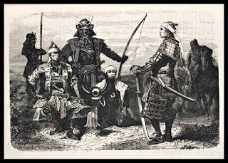
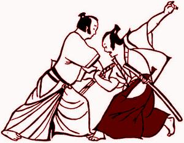

Historia del Jiu Jitsu
Del campo de batalla de los Samurai al tatami de tu barrio.
Orígenes del Jiu Jitsu
Hace muchos años, los guerreros Samurai del Japón feudal aprendieron una variedad de formas de lucha que en su conjunto se conocieron como Bushido (el camino del guerrero). Entre sus muchas habilidades de lucha se encontraban la capacidad de disparar flechas a caballo, usar katana y wakazashi y defenderse cuando habían perdido sus armas. Con los años, las habilidades de lucha cuerpo a cuerpo y las técnicas que aprendieron fueron refinadas en sistemas que actualmente se conocen como Jiu Jitsu.
Jiu Jitsu significa, literalmente, el arte de la flexibilidad y suavidad. El fundador del Judo, Jigoro Kano (siendo él mismo un maestro de Jiu Jitsu) rastreó el surgimiento del arte al período ubicado entre 1600 y 1650. Los registros nos muestran que en la edad de oro del Jiu Jitsu, desde finales del siglo 17 hasta mediados del siglo 19, se encontraban en existencia más de 700 sistemas diferentes. Pero la historia del Jiu Jitsu es larga y complicada y nadie está completamente seguro de sus verdaderas raíces.


Evolución del Jiu Jitsu
Nuestro interés occidental en las artes marciales japonesas se remonta a finales del siglo 19, cuando la comunicación y el comercio entre Estados Unidos, China y Japón aumentaron. Antes de la Segunda Guerra Mundial, un número de militares alemanes recibieron entrenamiento de Jiu Jitsu de sus homólogos Japoneses y, como la influencia occidental creció en Japón tras el fin de la Segunda Guerra Mundial, un gran número de militares en Japón fueron expuestos a artes marciales como Judo y Jiu Jitsu. A su regreso, estos militares enseñaron dichas habilidades de lucha a civiles, a menudo invitando a sus instructores originales a visitar sus clubes.
Por la década de 1960 las artes marciales Japonesas como Karate y Judo se habían vuelto muy populares en Occidente, seguidas por el Jiu Jitsu hacia finales de la década.
A medida que los sistemas de Jiu Jitsu tradicional se extendieron por todo el mundo fueron adquiriendo vida propia. Algunos permanecieron fieles a sus raíces y pueden ser llamados Nihon Jiu Jitsu (Jiu Jitsu Japonés). Otros han sido acogidos por la cultura en las cuales se los enseña y se han convertido en Goshin Jiu Jitsu (Jiu Jitsu para defensa personal).

La Escuela de Shorinji Kan Jiu Jitsu y The Jiu Jitsu Foundation
El Jiu Jitsu es un arte marcial dinámico que está en constante evolución para satisfacer las necesidades y exigencias de los tiempos y los entornos en los que se enseña. Es por eso que técnicas similares se suelen enseñar de maneras muy diferentes, pero todas ellas incluyen alguna forma de patada, golpe, lance, bloqueo de articulaciones, retención y en algunos casos, el uso de armas.
Shorinji Kan Jiu Jitsu, siendo una forma moderna de Jiu Jitsu, es una especie de híbrido. Si bien sus raíces se encuentran en Gendai Jiu Jitsu, el sistema se encuentra en constante evolución.
Aunque la escuela de Shorinji Kan Jiu Jitsu se enseña en varios países por una serie de diferentes asociaciones de Jiu Jitsu, la escuela se asocia principalmente con The Jiu Jitsu Foundation o TJJF en el Reino Unido. The Jiu Jitsu Foundation tiene clubes de otros países de todo el mundo. La escuela de Shorinji Kan Jiu Jitsu es un estilo moderno basado en las variaciones del tradicional Jiu Jitsu Japonés, incluyendo Yagyu Shingen ryu y Kito ryu, que está estrechamente asociada con Kodokan Judo.
The Jitsu Foundation enseña Shorinji Kan Jiu Jitsu tanto como embu tradicional, en el que las técnicas, su aplicación y el espíritu en el que se realizan se consideran importantes; así como un sistema de defensa contra oponentes armados y desarmados, con armas modernas como botellas rotas y armas más tradicionales de artes marciales tales como cuchillos y espadas. Históricamente, el estilo se ha centrado principalmente en la aplicación de llaves, lances y golpes a partes vulnerables del cuerpo. Si bien se espera que las técnicas sean realizadas de una manera realista, los golpes defensivos a sectores vulnerables de la cabeza y el cuerpo suelen evitarse durante la práctica.
Aunque el estilo de Jiu Jitsu practicado por The Jiu Jitsu Foundation ha estado abierto a otras influencias, los historiadores del Jiu Jitsu rastrean sus origenes a Riukiu Myura, un policía y posteriormente jefe instructor de combate sin armas en la Academia de Policía de Tokio a finales de 1940. Myura estudió varios estilos de artes marciales predominantes, entre los que se encuentran Yagyu Shingen ryu, Kito ryu y Kodokan Judo. Myura había sido alumno de Yamaguchi Sensei, quien fue instrumental en el establecimiento del aiki jiu jitsu y aikido. A través de su trabajo con la policía Myura tuvo una amplia experiencia en lucha callejera, y combinando sus experiencias de Jiu Jitsu, ayudó a desarrollar su propio estilo.
En las visitas a Australia en la década de 1950 Myura enseñó a Matthew Komp de Alemania, quien había emigrado a Australia después de la Segunda Guerra Mundial. Komp, quien había estudiado Judo y Jiu Jitsu antes de la guerra con varios instructores Japoneses, incluyendo a Wolfe y Hassermayer, abrazó el trabajo de Myura. Komp, quien también tenía grados en Aikido y Karate, fundó una escuela en Footscray, cerca de Melbourne, pero no tenía permitido enseñar Jiu Jitsu legalmente, motivo por el cual lo enseño como si fuera Judo. Los registros indican que Myura era un visitante regular del club para dictar cursos y clasificaciones.
Matthew Komp enseñó a Brian Graham, quién estableció su primer club de Jiu Jitsu en Yorkshire en 1967. A pesar de que Graham fue alumno de Matthew Komp, también fue muy influenciado por otros instructores Japoneses de Jiu Jitsu, incluyendo a Myura, quien visitó el dojo de Footscray. En muchas maneras, Brian Graham se convirtió en el verdadero padre fundador de Shorinji Kan Jiu Jitsu, en tanto él sintetizó sus muchas experiencias de Jiu Jitsu con su amor por el Judo, Boxeo y Wrestling (Lucha). A pesar de que Brian Graham fue responsable de llevar el Jiu Jitsu al Reino Unido y posteriormente a los EE.UU. y Canadá, uno de sus primeros alumnos, Sensei Peter Farrar (quien comenzó a aprender Jiu Jitsu a la edad de nueve años) fue responsable de la expansión inicial de The Jiu Jitsu Foundation hasta su muerte en 1997. Shihan Brian Graham falleció en 2005 pero The Jiu Jitsu Foundation ha continuado su expansión y ahora cuenta con clubes en 14 países diferentes.